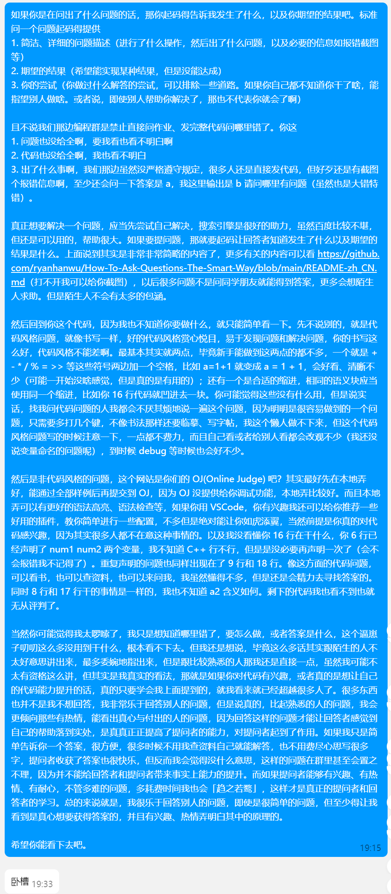
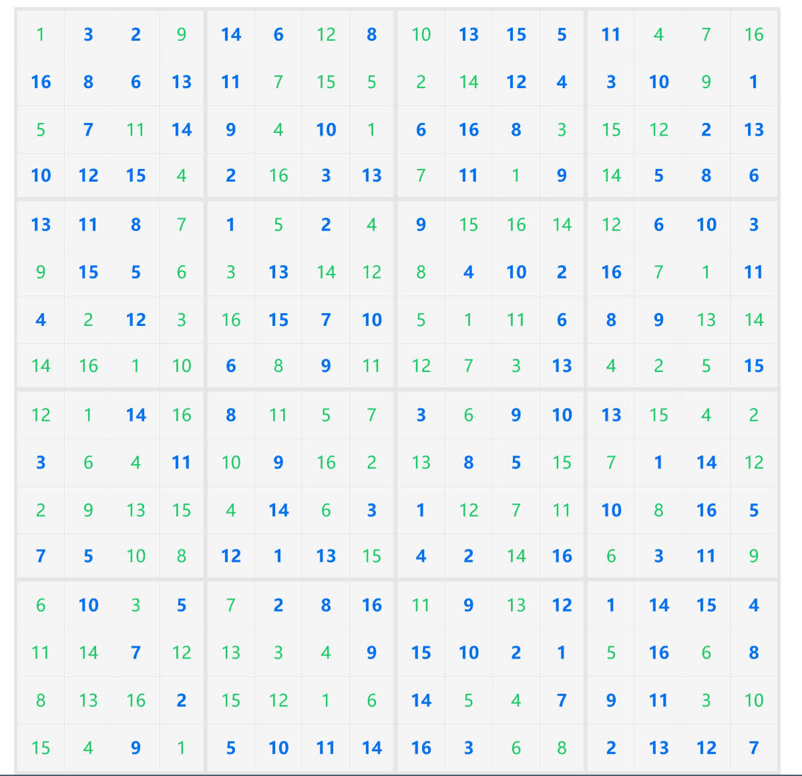

1 日
闰年 2 月结束了，因为这周比较忙就没怎么记，今天放假了才腾出点时间。最终是以近一万一千字结束。
OneDrive
前几天抽了个时间，清了一下原本 5T 那个 OneDrive 的内容，忍痛割爱删掉了些收藏，从 4T 砍到了不到 900G。开始砍的原因是我估计不太可能可以恢复了，ITSC 官网已经悄悄改成 100G 了，还有别的大学如香港中文大学也发了公告，了解了一下也知道了超过限额一定时间后会被删除，那就只能下下来保存到本地了。现在留下来的基本是不能动的珍品。为了腾出空间，也只好把之前安娜档案的种子删了，上传率还不到 0.6 呢，非常遗憾。
砍掉的收藏以后可能下得回来，也有可能从此消失了。只能说 5T 砍到 100G 太狠了，起码留 1T 啊。这周末打算下下来，然后转移一下，原本 1T 的放 D 盘，5T 的放移动硬盘，现在要换过来了，而且那边 170G 左右也得清理一下了。
gVim
前阵子，发现 Ctrl + J/K（跳转上下窗口）用不了了，表现和 Ctrl + Shift + J/K 一样（缩放当前窗口竖直长度），然后我去移动了 mappings 调换顺序后，前者又覆盖了后者。
但我分明记得之前是能用的，虽然说我记得原本的实现这样功能的键，但是还是得恢复一下。于是采用二分法最终发现 9.1.0044 是最后工作的 patch，9.1.0059 是第一个出问题的 patch。接着看 patch 9.1.0059 更新记录，想看看大概是哪个 patch 出的问题，去搜索一番有没有相关问题，然后再去提 issue。
从低往高看，"9.1.0050: Win32 Keyboard handling is sub-optimal" 这个更新引起了我的注意，于是我就点进去看了。
看也看不大明白，但是增加的文档信息有这么一行命令
:call test_mswin_event('set_keycode_trans_strategy', {'strategy': 'experimental'}) |
我就试了一下，还真可行，就好了。然后再执行了
:call test_mswin_event('set_keycode_trans_strategy', {'strategy': 'classic'}) |
后就又出现问题了。所以肯定了估计是这里出的问题。
再看了看文档后，我的理解大概是这样的，patch 8.2.4807 改用了一个新的键码处理方式，但是这个方式引发了很多问题，因此在 patch 9.1.0050 时默认改成了旧的，但是可以使用上面的命令开启新的，也就是实验性的。
由于 classic 影响到了我的映射，而且我之前映射没碰到什么问题，因此决定改用新的。但是把上面的命令加到 vimrc 里却行不通（不过我是加到最上面，不知加到最下面行不行，没有试）。
继续看文档，文档说可以使用一个这样的环境变量 VIM_KEYCODE_TRANS_STRATEGY，设置为 experimental 或 classic，就会生效。
但我试了一下还是不行，无论是加到用户还是系统。我百思不得其解。
但是按照它文档写的，我在命令行设置环境变量，然后命令行启动 gVim，却行得通。
接着我再直接去安装目录双击 gvim.exe，也可行。同时 Win + R 执行 gvim 也可行。
这就奇怪了。最后我在 Environmental Variables don't change when reloading an AutoHotKey script 找到了答案。原来 AutoHotkey 在首次加载脚本时会复制一份环境变量的副本，此后这个脚本所有进程都使用这个副本，而我虽然不断重启 Vim.ahk，但是使用的却是 /restart 开关，它仍然继承了之前的环境变量，并没有更新。
解决方法就是彻底重新加载脚本就行了，或者重启一下以后就没问题了。不过为了稳妥，我还是多添了一行作为保险。
EnvSet("VIM_KEYCODE_TRANS_STRATEGY", "experimental") ; Vim patch 9.1.0050. See also `:h w32-experimental-keycode-trans-strategy` |
另外再提一嘴，gVim or GVim？这里不涉及 gvim，讨论的是像 LaTeX, VSCode（其实应该是 VS Code，只不过个人习惯已经用比较久了，改了的话就前后不一致了）这样的标准拼写。我一直用的是 gVim，意味着 GUI Vim，感觉 GVim 有点喧宾夺主了，但其实我感觉 GVim 更好看一点。
搜了一下还真发现有人问这个问题：#3170: GVim or gVim - how to write it。
不过由于 Bram 应该更倾向于 gVim，我也还是保留这个拼法：
I would say that Vim is the strongest part of the name, and prepending "g" is for the GUI variant. Thus gVim would be preferred.
…
I also think that gVim looks better.
发展测评
今天八点的闹钟，但是这周都挺早醒，不到七点就醒了，可能有生物钟的原因，不过今天是机关枪的原因。但是硬是多躺了半个小时才起床，即使有很大的诱惑。
话说感觉被子变短了，腿伸直就盖不住了，类似「申」字，按朝向，下面是头。
由于我不会穿衣服，每天出去都冷得不得了，生病也是早晚的事。今天醒来后喉咙痛，下午醒来后泡了两杯冲剂，然后疯狂喝水，现在还是痛。
终于进入正题，讲讲这个发展测评了。昨天晚上发了个测评表，晚上十点多线上会议讲，由于我当时还没背 Anki，再加上回放可以倍速，就没听了。
今天摆了一下午，想想先把这玩意搞定，看完了视频和这个综测表，谈谈我的感受。
感受就是太抽象了。加分捞不到，扣分倒容易。
青年大学习我记得好像就做了一次，还是第一次……
志愿时长上学期只做了 2h，按规定似乎是一学年 10h，有的说会看一学期 5h 要求有的说不会。但是测评表上面写了要一学期 10h。
然后我去看发现我还没认定志愿者，认定填英语成绩我填了 0，因为还没考四级。认定完后 2h 没了……
不过看到南星的时长，但是还处于未认定状态……截了图保存，不知可不可行。
加分的话，志愿时长不知可不可行，即便可行四舍五入也没了。还有参加了一次新生导师见面会，有 1 分，但是有合照却没发到群里，而且我也没在群里说话，截了个没有我的聊天记录（是说约定时间有没有课的），太抽象了。
此外就没有了，才发现我真是太摆了，啥也没做。
其它扣分的事项比较严重，基本没有。
提供的材料必须是纸质版，也无比抽象。肯定不会是防篡改，毕竟篡改后打印出来还是算纸质版。那我估计就是存档的作用了。
还有同学评分这个占比 20% 那更是寄中寄，毕竟前面虽然分值大，但是大部分人差距不会太大，而这个同学评分对社交圈比较广泛的人比较友好，对涉恐的我比较难办。总分班级前 40% 有优秀，看来是与我无缘了。
只能安慰自己说不评奖评优就没啥用。
热水
喝了很多热水，喉咙还是很痛。
这两天洗澡，得花个五毛（最小单位是一分）花洒才放得出可接触的热水，完全冰冷的水可以持续四毛多。
课程
小刷了个 B 站。抛开吃晚饭前看的，吃完饭后从六点（出头）开始计，看到十点（出头），四个小时，所以现在赶紧来简单写点。
上了一周课，简单评价一下各个课程，一样按课表顺序。
软件工程与计算
认识了个新平台，Piazza。老师不错。
游泳初级
老师看起来挺严厉，不过一节课也看不出什么，红黑榜里算红的。
离散数学
说起来，这两节课我坐的位置似乎是一样的（同一间教室，也都是我早上第一节课）。然后计基坐后面一排（因为从别的地方赶过来占不到座位）。
老师会 ，也推荐了 ，甚至作业都可以用 （虽然我打算用 markdown）。不过注意到老师打 用的是 \wedge，虽然说呈现效果和 \land 一样。老师也不错。
微积分
老师不错（我好像就会这一句了），但还是差不多是念课本。于是我第二节就开始写作业了，第三节去修正笔记和继续往后看了点。
换了课一个可接受的弊端就是教室变了，从新教变到逸夫馆。换课前周二上午上完离散，不用动就可以继续上微积分了，现在要匆匆忙忙赶到逸夫馆，而且其实路途不短，新教和逸夫馆正好在教学楼左右两端。然后双周时下午上完微积分又要从逸夫馆赶回新教上计基，而换课前只要下个楼就好了。周四下午情况就和周二下午一样了。
思想道德与法治
老师上课还行，我也不会一直投入到笔记本中（也有老师经常游荡的原因）。不过任务也挺多的（别的老师似乎差不多），比上学期马原多了不少，比如要拍什么十多分钟的微电影（其中一个选题）啥的……
学术性阅读：语言与思维（读写）
任务好多……我还没细看，但是每周工作量都不小。比上学期听说多得多得多。
说起来我理想中的英语课其实像上学期读写课差不多（虽然最后分不高），基本上下课都没事情。我比较懒，英语我没啥兴趣，只是当作一种必不可少工具，说起来对语言的兴趣，文言文都比英语高，毕竟我对历史有着浓厚的兴趣。所以花费这么多时间投入到英语我觉得很不值，尤其是当我现在看英文网站都是看全文翻译，看不懂才再看原文时。
说真的这些学英语的时间不如去学其它科目。
当然老师应该还是不错的，只是我是一个摆人。
军事理论
好好好！本来带了笔记本，打算先看完一个好像是软工计的补充阅读资料 PDF（已经看完一部分了），然后干点别的事情。结果愣是只翻了一点，全程认真听老师讲课。
虽然与我本身对军事方面有点兴趣（由历史的兴趣衍生出来的，归根结底是对历史的兴趣），但也不可否认的是老师能够带动我的兴趣。真的是不得多见的好老师，真的能让我全神贯注在课堂中，尤其是在一个跟上学期马原差不多的教室中挤了两倍多于马原的人数，左右完全没有空隙时，更是难得可贵。
高级英语口语（听说）
老师很温柔，但是任务也很多，也是比上学期多不少。
现场就分掉了小组，课程阶段要做三次 pre，组内每人上台一次，然后就是另外两人负责写稿和 PPT。课程前以及期末都各还有一次，每人实际参与 5 个 pre。
在新教上课，很感动，上完离散上个楼就可以了。
微观经济学
周四下午上完计基，从新教奔波到逸夫馆放包，然后再匆匆忙忙去餐车排队，回来吃完差不多就上课了。一小片凉的面包 + 一块温的鸡翅 + 一条热的火腿 = 10 元。说实话感觉比炒饭和辛拉面吃得香多了，前二者吃多了，腻的要吐了。
上课不久开始神游，最终一点没听，课堂小测完全看不懂，还好老师误操作发了答案，小抄了一下。
有感
本来其实能写更多的，但是因为下午晚上摆了，现在十一点二十还没背 Anki 呢。即便如此文件大小已经有 2 月的 了。但是还是有个不得不贴出来的。

今天高中同学问我问题，有感而发写了很多（字数统计一千六左右）。其实说得内容不多，只不过我语言比较啰嗦。前后文就不贴了，没必要而且我不能做主。
按计划应该这里继续补充的，但是显然已经没有时间了。但我想也已经够传达我的一些想法了。
3 日
OneDrive
花了近一天的时间，把 800+G 的文件下下来了（大概 500G 左右是仅存在云端的）。170+G 那个不知道做了啥，去看才发现没 150G 了，然后砍掉了一点没用的备份（如 GoldenDict，当时 6T，可以挥储如土，现在只有 1.1T 了，比较拮据，只能省着点用了）。另外我对空间的掌控真不错，全下下来后移动硬盘只剩下不到 7G 了。
接着刚刚乾坤大挪移，交换了两个 OneDrive。操作流程就是，确定了所有文件下下来后，打开两个 OneDrive 的管理页面，然后取消链接，管理页面删除所有文件（满的那个还得清一下回收站，第二阶段没清），然后交换两个 OneDrive 名称，因为我用 desktop.ini 改变了显示名称，不可以直接重命名，于是就用 Bash 的 mv 命令。但是会提示 Permission denied，估计是有占用。PowerToys 的工具提示 Explorer 有占用，然而几次结束任务都不行。最后是用火绒的结束操作，甚至任务栏与已打开的文件夹不会像用 PowerToys 结束一样一起被结束，就可以 mv 了。最后就是重新链接 OneDrive，交换过来，剩下的工作就是让它们重新上传了。
乾坤大挪移后还有几点要改动的，比如说 BT 有的放在了 OneDrive 里面，一个个重新设定位置就可以了。还有 LiteLoader 插件我也跟设置一样放文档了（话说 Documents 还真就叫「文档」，我还以为只是显示名称），由于这个是直接用的绝对路径，也要改一下。目前似乎还没碰到别的要改的。
下载速度有 20+M/s，上传两个加一起才 7M/s 左右，得传到猴年马月。
摆烂
日经话题，哪一天我不骂骂自己摆烂这一天就算是白过了。
而现在，三天周末的最后阶段，晚上十点多，Anki 没背，有的作业还没写，即将再次以毫无收获的姿态结束大一下学期的第一个周末，让我又一次想在这个话题写点东西。
第一个想到的是图书馆，不知道为什么，也许跟我早上第三次去图书馆——去打印英语的教材和综测的材料有关。
想着刚回家那段时间说在家里比在宿舍摆多了，刚开始确实，不过也许是因为假期综合征，现在我跟在家里差不多摆。
为什么我会认为在宿舍会收敛一点呢？以前似乎没提到，那就先再来讲讲吧。主要是我感觉我是一个非常懒散的人，没有外力作用下基本是懒得学习，会尽力逃避学习。就像一根正常放置在桌面上的弹簧，在重力作用下会稍微压缩一点、努力一点，但是若没有外力的作用，就只能一直处在那样躺平的境地。而只要给我一定的外力作用，我也就会发现其实我还是有这个能力或是潜力的，是可以做到很多事情的。然后一旦撤去这个外力，一开始还能由于惯性保持，但是失去了外力，会在努力一段时间后大幅摆烂，然后痛心疾首再次奋发图强，以此循环，最后回归常态，像一个阻尼振荡的弹簧。
然而我又是一个不甘于被约束的人，若是谁给我这个外力，这个压迫，我反而会幼稚地叛逆：你谁啊你？就你还想管我？凭什么？就像一只手按弹簧，按偏了，反而弹簧会跳到旁边躲开你的手，然后继续保持之前的状态。
因此这个外力就必须足够有力，必须能慑服我这个摆子，公众形象就是其中一个能慑服我的外力。
虽然说我一直在强调我很摆烂，不管是跟同学讲，还是在这里讲，但是我猜很多人不会信服，就拿高三举例，因为我在教室还是不怎么摆的，最多也就是别人晚自习写作业、复习时自己写写画画草稿纸，然而这些别人也并不会知晓的。而到宿舍（高三下学期初），舍友们打游戏时我还能在背 Anki，你要说这是在摆烂我自己都不信。
这背后的原因其实是，我因为顾惜公众形象，基本不会在有人的地方进行完全的摆烂。这不是说我不会在有人的地方摆烂，而是不会摆得太过。真正摆烂的内容，要么是非常无聊的打发时间，过后即忘，想说也说不了；要么就是摆得惊天动地，难以启齿，说不出口。
然而随着我的脸皮越来越厚，逐渐没脸没皮了，加上舍友、大学同学也不了解我的过往，我没必要维持之前的形象了，完全可以另起炉灶。在宿舍这种场合，也就逐渐变得像在家里一样，摆得多了。
而这又与图书馆有何关联呢？其实上面也是扯淡，我还是会在乎一点的，就像图书馆这样人员密集的场所，我就不敢摆得太过，一些宿舍、家里能做的事情，图书馆里就不敢做，而那些事情，基本上都是很摆烂的事情，因而图书馆确实能提高学习效率。当然其实宿舍也是跟一样，有不想在家里一个人能做的事情，但我避而不谈了。
说到图书馆，我又想起来大概是 2021 年，我还经常周末去深图，不是去看书，而是去写作业，比起在家里确实图书馆效率会更高一点，经常从早上待到傍晚。我会想起这个倒不是因为别的，而是因为想到当时刚刚认识了 Anki[1]，当时分层级建好了牌组，虽然没有一张卡，但是我却能充满热情和激情，心中想的满是 Anki 在手，天下我有，热血无比，对未来充满无限的希望。
本来还有一点想说的，就是虽然我对自己似乎无限贬低，但是我从始至终都认为我是一个有才能的人，以及我对理想、未来的一些看法。不过嘛，已经十点过半了，理想什么的，得给 Anki 让让路了，那就下次有机会再谈吧。
4 日
中午下雨，除了宿舍门禁看手机才看到群里说不用上课，又折返，这么说还挺爽的。
然后又小摆了会儿，现在体育课也差不多要下课了。
梯子
昨天 commit 完我就想到漏写了很重要的一件事，那就是我梯子过期了。最终大概是用了不到 36G，但是由于签到得流量，净消耗不到 3G 好像。体验还是不错了，12 元/月有这样的体验，还是很值的，包年就有 8 元/月了。
但我没继续续费，因为前阵子趁着新年优惠，在另一个梯子那里买了 240G 不限时流量，原价 20 元，新年折扣 3 元，然后再加上手续费，最后价格 18.11 元。
如果按 40G/月计算的话，可以用半年，这样每个月只用 3 块钱，还是比较实惠的。而且 40G/月还不太可能，在寒假比较频繁地使用的情况下都没到，何况在学校。
现在用了差不多一天，体验没啥差别，各种常用网站还是差不多的，也试过了 B 站。
比较遗憾的是这个新的没有前面那个，有专门 B 站的 proxy-groups，因此我手动从前面那个复制了。一更新会覆盖掉，也只好改了更新间隔，一年一更。
还有一点差别大概就是这个节点是自动选择的。
另外之前说错了，按照我这一个月及今天的使用经历来说，两个梯子都不会管 BT 的流量。OneDrive 世纪互联的似乎也不会管，我看 log 里面是 DIRECT，另一个似乎会管，保险起见加到了规则里，现在拼命上传，但没影响到我的流量消耗。
分享
快八点了，刚刚在知乎看到了一篇文章，写得非常触动我，在这里分享一下。
非常长，字数统计有两万多字，我看了大概四十分钟，不过嘛看得很舒服，尽管里面有很多名词我不懂，但仿佛能体会到作者当时的情感。
喜欢这篇文章的一个原因是格式，格式非常好，看得赏心悦目，非常舒适。第二个，也是最重要的原因就是，感觉作者跟我非常像，这点尤其难得。不过作者还是比我厉害多了，接触编程以及对这方面的投入、兴趣都比我足，但我还是很感动能发现一个跟我有蛮多共同点的人，也许能从中看出我自己的人生轨迹。
说起来我是怎么看到这篇文章的呢。起初是不知道从哪里跳转到知乎一篇目录性质的文章，同一个作者，是讲环境配置的。多次提过，我这个人为抗拒学习（尤其是英语），可以干很多事情。而看这种文章尤为是我喜欢阅读的，虽然其实大多数时候学不到什么。然后进了第一篇文章，看完后发现目录页不在了，就进作者主页去找了，然后看到了这篇文章。
作者的教程写得精细入微，同时还很美观，是难得的好文。也许因为是今年的文章，而且尚未完工，浏览量不大，但是我决定这周抽时间读完。
7 日
背 Anki 时越想越气，暂时中断一下来写。
今天去梯子官网逛了逛（每天都会去，因为交了个工单，不记得中午的时候去没去），发现已经使用了 80G……由于每天都会去，我记得昨天还是正常的 1+G，那么唯一有可能消耗的便是凌晨电脑挂机同步 OneDrive 了（已经同步完成了）。
然而那既然如此前几天还有同步几百 G 却没事不知怎么回事并没有消耗流量……而且这段时间内因为自己修改了规则，也没有进行同步。只有 160G 不到了，抑郁了……
11 日
体育课俯卧撑，手臂酸痛无力……但还是写点。
为何我坚持阅读中文，即便是机翻
周日时终于去看了看 Composing Programs，虽然看了一天只看了一章多一点（倒不是因为看得慢，看得飞快，但是看不住，看一会就开始开小差了）。
然而我并没有看英文，而是借助沉浸式翻译的谷歌机翻进行阅读，于此同时我也思考了一下「为何我坚持阅读中文，即便是机翻」。
我得出的结论是，阅读中文时，我可以迅速浏览一遍然后大概知道它在讲什么，至少知道它在谈哪些大方向，从而我可以自行决定要不要细读，这是我阅读英文完全做不到的，会大大减慢我的阅读速度。因此，即便只有机翻，我还是更倾向于阅读机翻来获得要点，而不是去读原文。
英文阅读也许也可以做到浏览一遍大致知道内容，但是远远超出了我的能力。并不是我不想获得这样的能力，而是要付出的时间、精力成本代价太大，我认为对我现在来说见效不大，得不偿失。
Copilot
上面打「」时，等着 Copilot 自动给我补全，等了一会没动静，才想起来我把 Windows Copilot Vim 在 markdown 文件默认禁用了。
在此之前，我也把 Blog 的 GitHub private 仓库删除了，因此 contributions 掉了一大堆。
理由是担心隐私，我并不相信 Microsoft 的保证。禁用 Windows 上的 Copilot 也是基于同样的理由，笔记在 WSL 上写，没啥隐私，因此不受影响，而 Blog 里隐私的东西，也不希望与 Copilot 共享。
做得有点迟了，但是亡羊补牢，为时不晚。
作业开始用 写了，因为要交 PDF，第一次用的 markdown 然后再浏览器打印出 PDF，最终决定直接用 ，直观感受就是我又要写 snippets 了……
Zathura
好累啊，手没力气，这点不想写。只要知道为了修了一点东西，改了一大片，折腾一晚上，最后成功修复，但是又出现一个问题就是了……
思路
最近有几点思路（大概是两个方向），感觉能写成很长一篇的博文，在这里记载一下吧。其实这个思路很早就有了，最早估计能追溯到 2021，不过上面说的那篇「八月」又给了我不少鼓励。
在这里随便提几个关键词吧，怕到时候忘记了，顺序不一定符合逻辑，两个方向由于有点重合，关键词就不加以区分了：
- 杨红樱
- 《查理九世》
- 探险书籍
- 郭靖
- 国际象棋
- 4399
- 洛克王国
- 生死狙击
- 素描
- cc, zy 与 Python
- Scratch
- 小海龟
- 画图比赛
- 机器人
- Flash
- 「世界」地图
- 一张莫名其妙的全屏截图
- 叶峻峣等与 Anki
- Castel
- 一只方橙与 VSCode & markdown
可能有遗漏，到时候再想吧。
不过近期肯定不会写的，下周似乎就要 pre，感觉近段时间事情都比较多，周末除了摆也打算看点书自学充实一下自我了，也不大可能抽出时间写篇长文。
JMR
算是写今天记事的主要动力吧。
JMR 圣诞赛后就没怎么看了（虽然有更新但是只是加了中文解说，兴致不大），前几天看了看发现居然出了新赛事，还能连看 100 天，不错，当电子榨菜正合适。
然而昨天今天两天却了解到一些事情，感慨本以为弹珠是一个纯粹的运动，结果背后还是有阴暗的人。
主要是这两个视频，还看了别的，但主要是这两个比较震撼（正好分别是昨天和今天看的）
没了解过相关内容估计完全看不明白。我大致了解弹珠联赛，但又不了解其运作细节，因此带给我的震撼才更大。这么看来，估计其寿命不长久了。
我看了看时间，大概是十一月底开始看 JMR 的，估计是一次蹲坑，闲得无聊刷 B 站，进而了解了这项运动。当时看的还是中文解说的拉力赛，后面去官号看，当时联赛正好更新到第十四场——离心碰撞，跟拉力赛完全不同，而且里面的队伍名字跟拉力赛也完全不同，因此一开始也没打算看（当然，我不打算做的事情很多最后都做了）。
有点惋惜，既是惋惜这一项运动在未来可能的消逝，也惋惜粉丝群体的付出付之东流吧。
我自己倒不会被影响太多，毕竟没投入什么精力和心血，是当成消遣娱乐的方式对待的，甚至连主队都没有，所以其实与我关系不大，还是能继续看剩余的一场又一场比赛。
16 日
效率
现在是周六，周末过了两天。效率还算高吧，虽然也摆了不少，但是总体上两天都是基本在学习写作业的，而且也都早上背完了 Anki，可能跟这周任务比较多有关。
昨天因为小摆了会，计划的微观经济学作业、自我陈述等推迟到了今天做。昨天基本上是把两个英语的 pre 做了。有一个不用我讲，但做 PPT 累死我了，虽然只是从词典里复制粘贴，但是我自己出于美感的要求，还得调一点格式（虽然只是比较简略的格式），不过对齐什么的就懒得管了，再弄这个就更累了。
今天主要是把数学作业完成了。微积分作业着实逆大天，第一周作业课上大概不到一节课做完了（Mathematica 做的）；第二周作业课上做了一大半（一节课没做完），周末宿舍做完了；第三周课上（分两次）做了一半，今天又写了挺久。主要是太抽象了，算得我一直在笑（这个后面讲，如果记得的话）。
微积分老师
说到这里就想起来，我要为微积分老师正名，老师不是只念课本，老师讲得可比书好多了。我现在也基本听课了，只是偶尔写作业和自己看书记笔记。
由此可见教材多烂，在最近这几节我深有体悟。而且老师人也很好。
军理老师
说到老师，那还得顺带说说军理老师。我并没有改变对军理老师的看法，依旧是神！第一周带了笔记本没看，第二三周就是根本没带笔记本了。
让我盘点一下我没带笔记本的课：
- 游泳
- 英语读写
- 军理
- 英语听说（这个其实带了，因为跟上一节离散连着，而且课前会 commit 一下，或者像这周一样玩玩数独）
数独
上面提到数独，就来说说吧。
最近发现一个网站（在小众上看到的），数独游戏。想起来高三时课上除了玩九井棋，还玩过数独，没记错的话是 hmy 有一本数独书，经常撕几页给同学们玩，我也是其中之一。
我只是一个数独新手，也没去了解过啥方法，因此做得还是有点吃力的，有一些甚至做不出来。
这个网站还是比较容易的，4x4 啥难度都能秒掉，9x9 中等也基本是可以不间断做完，再往上难度就和高三做的差不多了（应该比高三的容易一点）。
微积分课也玩过，基本玩的是困难，因为中等没难度，没挑战性，也几次没做出来。
周三中午玩了一把 16x16 的中等，难度比 9x9 中等大，比 9x9 困难稍微容易一点，但是也很吃力，主要是真的太多了，做得我眼花缭乱。9x9 中等最快大概 4 分钟，困难最快大概 7 分多，而这个 16x16 我做了 1 个小时 5 分钟 37 秒，中间也有不少卡壳。

而且感觉这个难度不太稳定，有的时候困难卡半天没思路，有的时候唰唰很顺畅地解出来。然后今天中午睡前又玩了一下数独，困难很快解决了，就想再试试上面的难度，结果砍瓜切菜专家、大师难度都过了，也没有卡很长时间。要说是我能力提升了吧，其实感觉没有，因为我的策略没变化，但要说难度没提升吧，数字似乎确实有减少（虽然不完全代表难度提升）。所以挺好奇这个难度是怎么弄的，还是说题库里抽的。
为了给离散数学作业做铺垫，在昨晚就开始筹备了。昨晚基本上把 snippets 弄好了，宏弄了一部分，而今天把宏弄完了。
跟 宏很不一样，有一些没加。
弄完后感受就是，有了 snippets，一些宏就根本没啥必要，比如下面基本就是历史遗留问题，完全可以用 snippets 代劳（\newmathcommand 是 StackExchange 找的命令，懒得看 re 不 re 的）：
1 | \newmathcommand{\le}{\leqslant} % 小于等于 |
还有一些比较抽象的，比如说我想让 \Re 为 ，\real 为 ，而默认 的 \Re 为后者，\real 无定义（ 定义为 \Re）。就得用下面的命令解决，也就是得用 copy，而不是直接定义，若直接定义，两个都会显示为 ：
1 | \NewCommandCopy{\real}{\Re} % 实部 |
是这样定义的（翻了一下它的源码找到的）：
1 | "\\real": "\\mathord{\\char\"211c}",//原\real |
为什么不把 \real 定义为 ，这样不就省很多事了吗？我觉得是因为不直观，命令和显示效果的预期是相反的。
像比如 par（）这样的命令没弄，因为没找到合适的，而且 \par 命令似乎不太方便重新定义，同时基于上面的原因，我后面可能会继续删减这类宏，就懒得弄了，还是直接用 \parallel（）吧。 是这样定义的：
1 | "\\par": "\\mathrel{/\\kern-5mu/}",//平行 |
摄氏度华氏度啥的也没弄，用处不大。
盒饭
这几天正餐都吃的餐车盒饭，没去食堂吃，让我盘点一下盒饭的好处吧：
- 有个塑料袋，可以给我当垃圾袋使（导致现在垃圾袋泛滥了）
- 可以边吃边看电脑
- 有时候会有酸奶，有时候还是冻的（这个是校园里面的餐车特供，宿舍附近的是没有的，有时候还特意宿舍走到校园里面去拿。最近一次的酸奶不知道是不是给饭捂热了，是热的…）
- 荤素搭配，健康无比（想我之前吃的就没多少素的）
- 不用选择困难（也是校园餐车，只有两个选择，15 和 18，我一般都是选 15 的，每次还不一样，还能有惊喜）
- 价格实惠
之前吃的辛拉面、炒饭都腻了，尤其是炒饭，都吃不完，之前吃得很香，现在真的难以下咽（也跟内容换了有关，虽然是同一道菜，但是实质变了）。
不过有个缺陷不知道有没有关联，就是我很饿啊。明明吃得比炒饭多，但是今天中午，还有现在（十一点半多），我都饿得没力。也可能跟今天脑力消耗有关？
还有就是，上学期经常吃饭时看自己写的笔记，偶尔还纠纠错，现在看得少了，尤其是吃盒饭看电脑，就更不怎么看笔记了。而且三周了才在形策课制了卡，我觉得我要重新研究一下看笔记的碎片时间。
臭味
明天写吧，好累。这会是一个大板块，工作量不小，现在也肯定写不完。
17 日
臭味
这学期开学以来，宿舍一直有股臭味，臭味原因下面会写。网上搜索了一下，下面是 Weber–Fechner law，描述了包括 smell 的「the relation between the actual change in a physical stimulus and the perceived change」：
最终昨天我买了一瓶液体空气清新剂，试图驱散一下臭味。
不能说完全没用吧，还是有点用的，但偶尔臭气强烈时，清新剂的味道和臭味混合在一起，形成了一种诡异的味道，还是很臭，这时候就会把清新剂拿近一点，希望覆盖过去。
昨天在床上就没闻到了，今天似乎还有一点臭味，所以也不敢保证清新剂对于远距离隔绝的效用。
另外这个清新剂似乎有催眠作用，好像昨天中午就非常困。
然后就是上面说的，做微积分作业怎么会笑出来，也不知道跟这个清新剂有没有关系。当时做微积分，要算好多，算得我心情烦躁，本来应该是非常焦虑内耗的，但是不知道为啥我感觉很好笑，甚至几次笑出来。可能有嘲笑自己太蠢了？也想到一些毒品让人异化，经常不分场合咧嘴大笑，然后随意地联想到这个清新剂……
可能有忘了写什么，有的话后面再补充吧，今天休息不好。
不准确，印象中更早以前就知道了，只是当时摆弄一会儿后就放弃了，而这时候是雄心勃勃，打算有一番作为了。 ↩︎